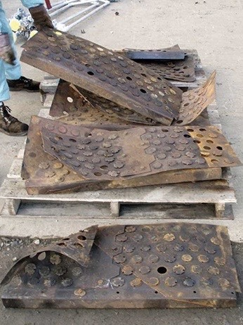
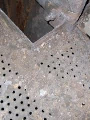
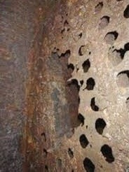
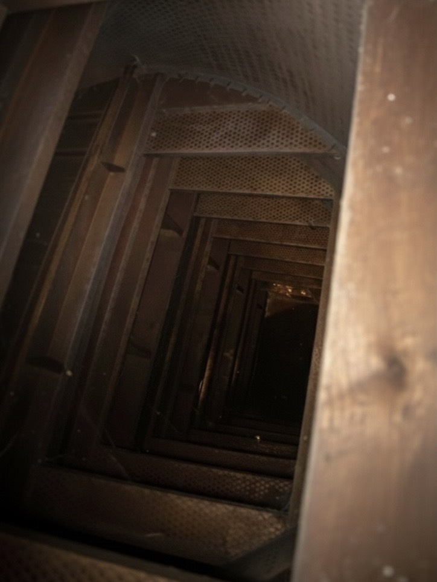
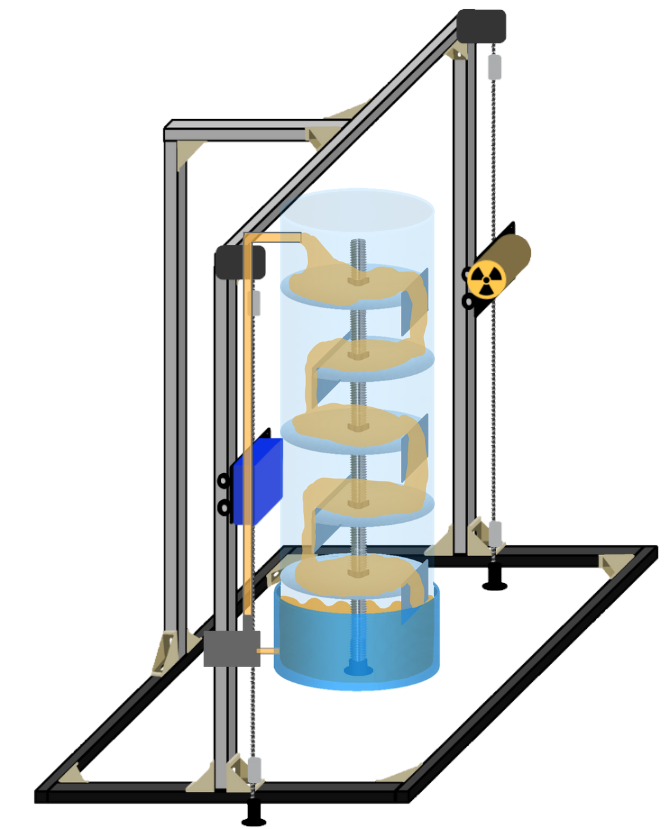
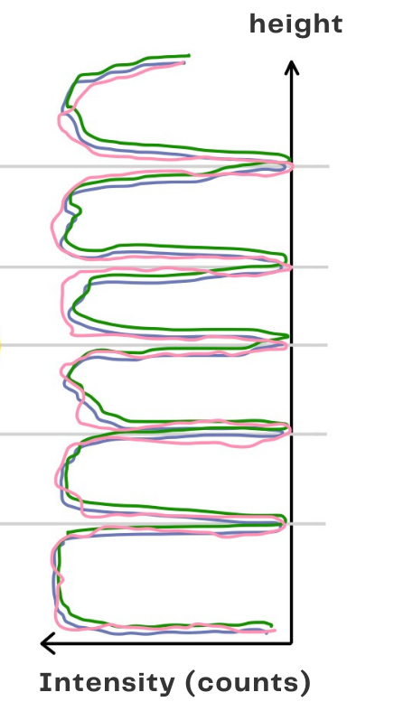

What's the problems?




Industrial distillation columns often face unpredictable failures like leaking, breakage, collapsed, or displaced trays. While inspections are essential, direct human entry is hazardous, and professional gamma scanning is costly and requires bulky equipment. These constraints make frequent monitoring and systematic damage study impractical.
Our Solutions


This project develops a lab-scale distillation scanning system to measure vertical density profiles using gamma transmission. The data is stored in a reference database to analyze and compare various tray damage conditions, offering a safe and cost-effective way to study internal failures.